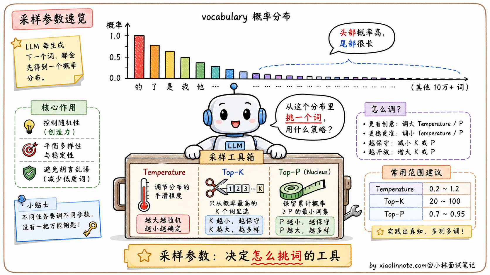
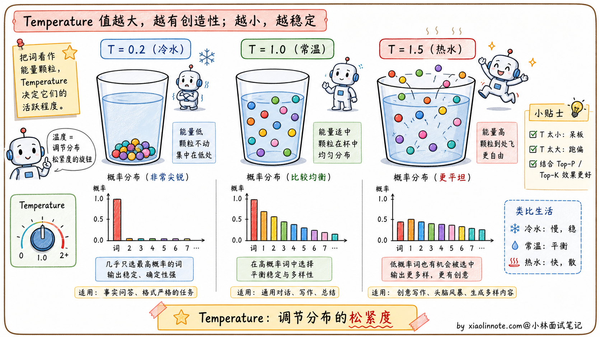
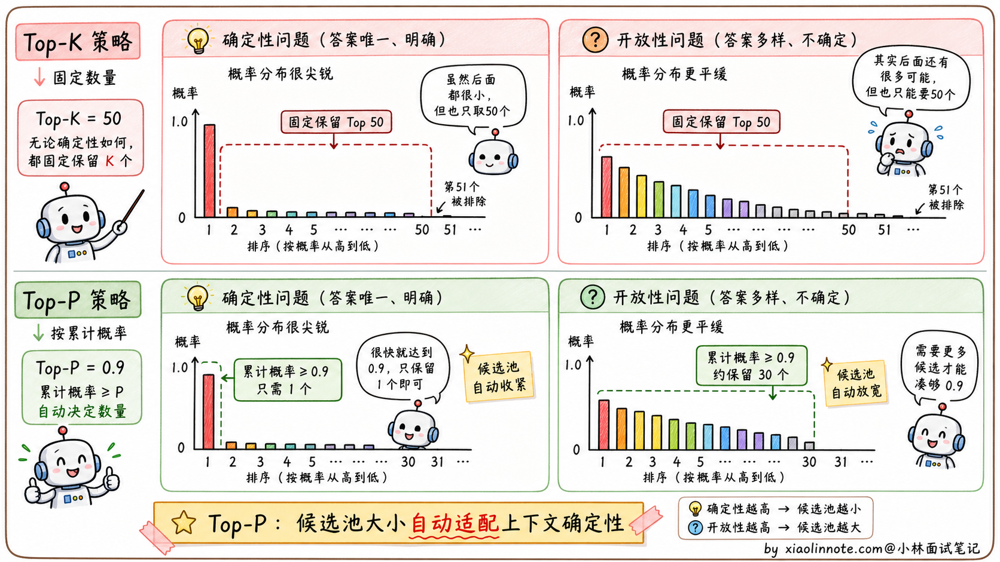
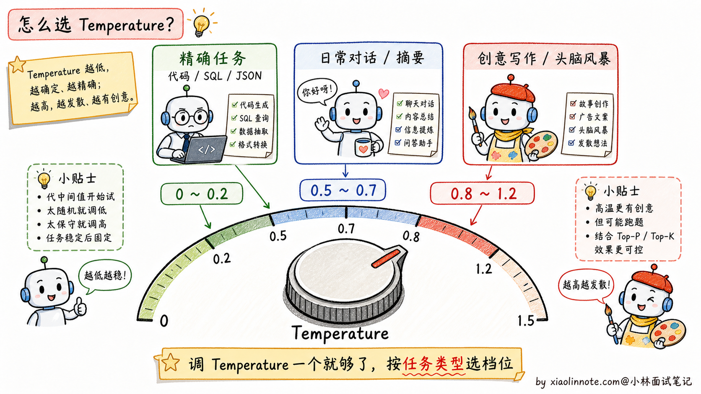

本篇目录
13. 大模型的参数：温度值、Top-P、Top-K 分别是什么？各个场景下的最佳设置是什么？
👔面试官：来讲讲大模型的几个采样参数：温度值、Top-P、Top-K 分别是什么？各场景下怎么设置？
🙋♂️我：温度高的话输出会更有创意，温度低就稳定。Top-P 和 Top-K 我听说过但平时没怎么调。
👔面试官：……「更有创意」是结果，没说原理。温度具体怎么影响概率分布的？为什么调高就「更有创意」？再说，Top-P 和 Top-K 都是「截断长尾」，区别在哪？哪个更智能？
🙋♂️我：呃，Top-K 应该是固定保留前 K 个词，Top-P 是按累积概率截断？
👔面试官：方向对了。那再问你一个实战问题：如果同时把 temperature 调高、top_p 调低，会有什么后果？这两个参数是协同还是冲突？
🙋♂️我：呃……我没试过这种组合。
👔面试官：典型的「会用 API 但没真的理解参数关系」。这两个参数是「叠加约束」的关系，同时调反而互相干扰。工业界的最佳实践是「只调 temperature，top_p 保持 0.9 左右，top_k 不设置」。这种实战经验得清楚，不然一调就调坏。回去搞清楚再来。
到这里我才反应过来，这三个参数从来不是「各调各的」，是一套协同关系。温度负责「整体平滑度」，Top-P/Top-K 负责「候选范围」，前者乘后者才决定最后的生成风格。
💡 简要回答
我调这几个参数的经验是，Temperature 是最关键的，另外两个基本不用动。
Temperature 控制输出的随机性，越低越稳定可复现，越高越发散有创意；Top-P 是从累积概率达到 P 的候选词里采样，比 Top-K 更灵活自适应；Top-K 是固定从概率最高的 K 个词里选。
实践下来，代码生成或者精确问答我会把 Temperature 调到 0~0.2，创意写作调到 0.8~1.2，日常对话 0.5~0.7 就够了。Top-P 和 Top-K 保持默认就好，同时调多个参数反而互相干扰。
📝 详细解析
先理解大模型是怎么「选下一个词」的
要理解这三个参数，得先搞清楚大模型生成文字的底层机制。
大模型生成的本质是一个「不断选词」的过程。每生成一个 token，模型实际上在做一件事：计算词汇表里所有词（典型 5 万到 15 万个）的概率分布。比如对于「今天天气真」这句话，模型会算出下一个词的可能性分布：「好」70%、「不错」15%、「热」8%、「冷」5%、「猫」0.001%……以此类推。

接下来怎么选词？最简单的策略叫贪心解码（greedy decoding），每次直接选概率最高的那个。这种方式输出完全确定，但往往过于保守，文本缺乏多样性，长一点还会陷入重复循环（前面已经讲过的「复读机问题」）。
为了避免贪心的死板，业界发展出三个采样调节参数：Temperature、Top-K、Top-P。它们各自从不同维度调控「怎么从概率分布里采样」，让生成既有合理性又有多样性。下面分别看。
Temperature：热水和冷水的类比
Temperature（温度）这个名字不是随便取的，背后真的有「热」「冷」的物理意义。
数学上，Temperature 的作用是在采样前对概率分布做「缩放」：每个词的 logit（未归一化的分数）会除以温度值 T，然后再做 softmax 得到最终概率。
温度低（比如 T=0.1）的效果类似「冷水」。冷水会让分子运动变慢、状态趋于稳定，这里也是一样：概率分布变得更尖锐，高概率的词概率变得更高，低概率的词概率接近于零。模型几乎只会选最有把握的词，输出非常稳定，但也非常单调。
温度高（比如 T=1.5）的效果类似「热水」。热水让分子运动加快、状态趋于混沌，这里也是一样：概率分布变得更均匀，原本概率很低的词也有了被选中的机会。输出更有创意、更多样，但也更可能出错或偏离主题。
T=1 是个临界点，概率分布完全不变，就是模型「原始」的采样。T=0 是另一个临界点，相当于退化成贪心解码（永远选概率最高的那个），输出完全确定，相同的输入永远得到相同的输出。

Temperature 解决的是「分布的松紧」，但还有另一个维度可以控制采样：候选词的数量。这就是 Top-K 和 Top-P 要解决的问题。
Top-K：限制候选词的数量
Top-K 的思路特别直觉：每次采样前，把概率分布截断到只保留概率最高的 K 个词，其余全部置零，然后在这 K 个词里按比例采样。
比如 Top-K=50 意味着每一步只从概率最高的 50 个词里选。K 越小，输出越保守；K 越大，可选范围越广。这个机制能有效避免「采到长尾噪声词」（vocabulary 里那 10 万多个词大部分都是无用的，长尾里偶尔抽到一个会让句子毁掉）。
但 Top-K 有一个明显的问题，K 是固定的，对不同情境不够自适应。
举个例子。如果你问模型「中国的首都是____」，模型对「北京」的概率可能高达 99%，剩下所有词加起来才 1%。这时候 Top-K=50 让你从前 50 个词里选，意味着候选池里有 49 个概率极低的离谱词，硬要从 50 个里选并不合理。
反过来，如果你让模型「写一首关于秋天的诗」，前 50 个词的概率可能都很分散，每个词都有合理的可能性，这时候 Top-K=50 又显得不够，因为可能第 51 个词比第 50 个词更有诗意，硬截断在 50 反而错过了好选项。
固定 K 的本质问题是：它不知道当前上下文的概率分布有多尖锐或多平坦。要解决这个问题，就需要更智能的截断方式，这就是 Top-P。
Top-P（Nucleus Sampling）：自适应的截断
Top-P 也叫 Nucleus Sampling（核采样），它解决了 Top-K「不自适应」的问题。
它的逻辑是：按概率从高到低排列所有词，累加概率，当累加值超过阈值 P 时停止，只保留这个「核」（Nucleus）里的词，然后在其中采样。
举两个对比例子就能看出 Top-P 的妙处。
「中国的首都是____」这种问题，模型对「北京」的概率是 99%，Top-P=0.9 意味着「北京」一个词就累加超过了 0.9，候选池里就只有「北京」一个词，结果非常确定。这正是这种确定性问题应该有的行为。
「写一首关于秋天的诗」这种开放问题，前几个词的概率分散，比如前 30 个词累加才达到 0.9，那候选池就有 30 个词，保留了足够的多样性。这也正是这种开放任务应该有的行为。

Top-P 的核心优势就是自适应。候选池的大小会根据当前上下文的「确定性」自动调整：确定性高时候选池小、确定性低时候选池大，这比固定 K 要合理得多。
讲清三个参数的原理之后，最关键的问题是：实际工程里这三个参数怎么配？
实际工程怎么配三个参数
讲了这么多原理，落到实战是这样：绝大多数情况下，只调 Temperature 一个参数就够了，Top-P 和 Top-K 保持默认值。
为什么？因为这三个参数的作用其实有重叠。它们都在控制「采样的随机性」，只是从不同维度切入。同时调多个参数会互相干扰，让你搞不清楚到底是哪个参数在起作用。OpenAI、Anthropic 等官方文档都建议通常只调 temperature 或 top_p 其中一个；Qwen、DeepSeek 这类开源模型也要以对应推理框架和模型卡建议为准。总之，不要一上来三个参数一起拧。
具体到不同任务的配置，根据多年踩坑总结，分三档场景。
精确任务（代码生成、SQL 生成、JSON 抽取、信息抽取、数学计算）。这些任务有「标准答案」或者格式严格，最忌讳模型乱发挥。Temperature 调到 0~0.2，Top-P 保持 1.0（不做限制）就行。Temperature=0 等价于贪心，相同输入永远得到相同输出，特别适合需要可复现的场景。
日常对话 / 总结摘要 / 翻译。这些任务希望模型自然流畅但不能太离谱。Temperature 可以从 0.5~0.7 试起，Top-P 保持 0.9 或官方默认值。这是很多 ChatBot、客服 AI 会尝试的配置区间，平衡了多样性和可控性。不要把某个产品某个版本的默认值当成行业固定标准，模型更新后默认策略也会变。
创意任务（写作、头脑风暴、角色扮演、营销文案）。这些任务希望模型有「惊喜感」，重复或保守的回答反而不好。Temperature 调到 0.8~1.2，Top-P 保持 0.95。这种配置下模型会偶尔冒出意想不到的好句子，也偶尔会跑偏，可以接受。
下面是一个常用的参考配置：
# 代码生成 / 精确问答（要可重复、不能出错）
temperature=0.0 ~ 0.2
top_p=1.0 # 不做限制
# 日常对话 / 总结摘要（要连贯自然但不能太发散）
temperature=0.5 ~ 0.7
top_p=0.9
# 创意写作 / 头脑风暴（要多样性，允许偶尔出奇）
temperature=0.8 ~ 1.2
top_p=0.95
最后讲两个常见的踩坑。
第一个是「同时调 temperature 高 + top_p 低」。比如 temperature=1.2 + top_p=0.5，意思是「让分布变平坦再截掉一半」，两个参数互相打架，结果完全不可预测。
第二个是「同时设置 top_k 和 top_p」。这两者都在做截断，先截 top_k 再截 top_p（或者反过来）会让候选池变得很奇怪。建议的最佳实践是「top_k 不设置或用默认，只用 top_p」，因为 top_p 更智能。
记住一句口诀：先只调 temperature，top_p 保持默认或 0.9~1.0，top_k 不设置。如果你决定调 top_p，就先固定 temperature，不要两个一起大幅改。这条经验能帮你避开大多数参数坑。
🎯 面试总结
回到开头那段对话，问到 Temperature、Top-P、Top-K，最重要的是先把它们的作用维度讲清楚，再给实战经验。
讲作用维度时可以这样组织：Temperature 控制「分布的松紧」（缩放概率分布的尖锐度），Top-K 是「固定截断」（只保留前 K 个词），Top-P 是「自适应截断」（按累积概率截断到 P）。三者从不同维度控制采样的随机性。
讲完原理后，把 Top-P 比 Top-K 更好的原因点出来：Top-P 能根据当前上下文的概率分布形状自动调整候选池大小，确定性问题候选池小，开放性问题候选池大，比固定 K 智能。这一句能讲出来就比死记硬背深刻一层。
最关键的实战经验是：一次主要调一个参数。最常见做法是先调 Temperature，Top-P 保持默认或 0.9~1.0，Top-K 不设置；如果要调 Top-P，就固定 Temperature。不要同时大幅调 temperature 和 top_p，两者会互相干扰。这个经验直接说出来，面试官就知道你真的调过参数，不是只看过文档。
如果还想再加分，可以提一句不同任务的具体配置：精确任务（代码、SQL）用 T=0~0.2、日常对话 T=0.5~0.7、创意任务 T=0.8~1.2。能讲出这种「按任务选 T 值」的工程视角，这道题就答得很完整了。
对了，大模型面试题会在「公众号@小林面试笔记题」持续更新，林友们赶紧关注起来，别错过最新干货哦！